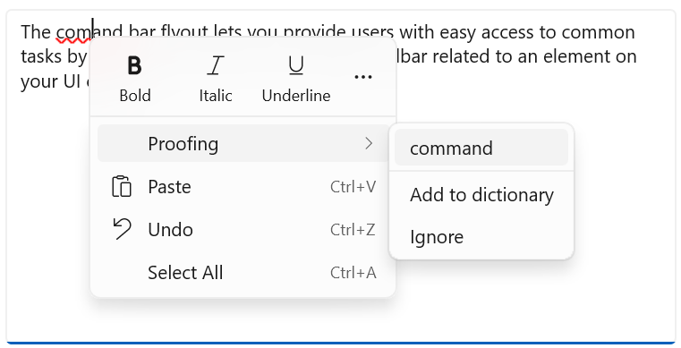
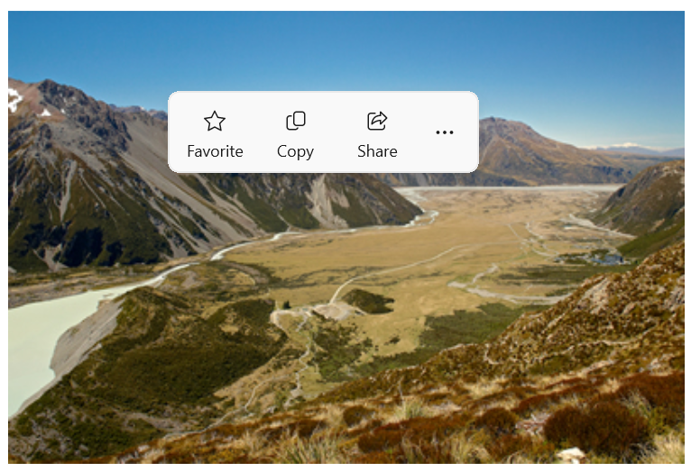
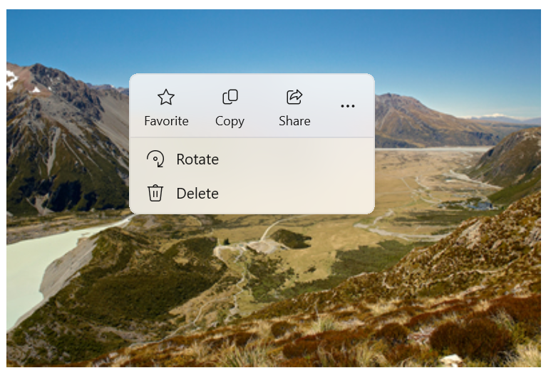
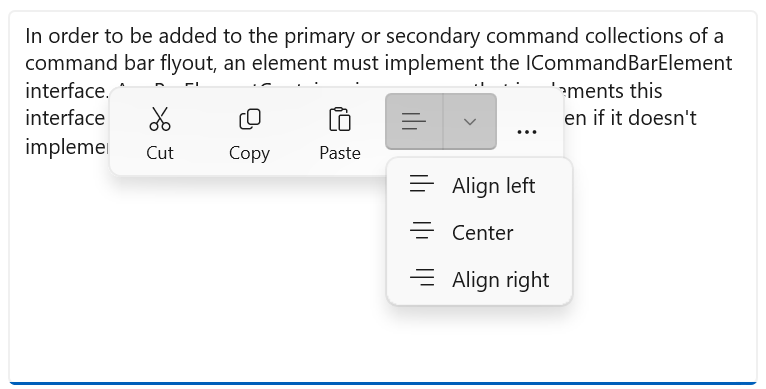
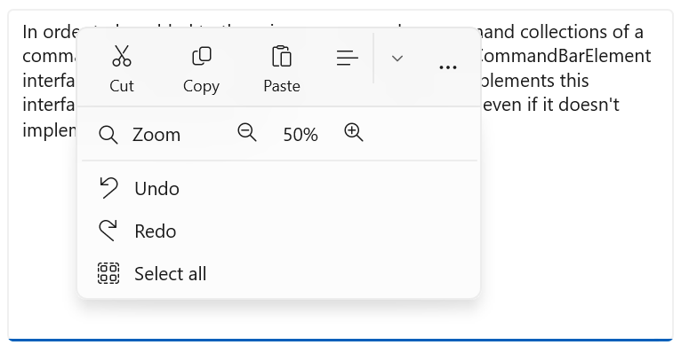
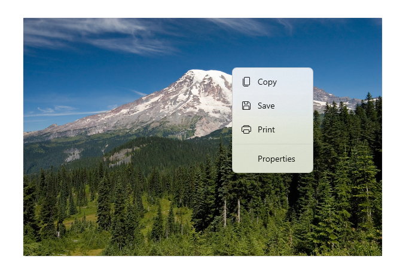
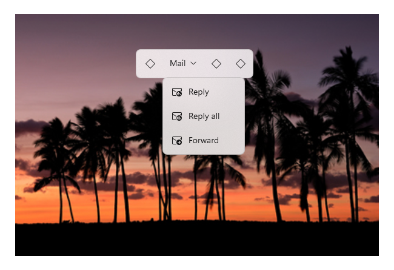
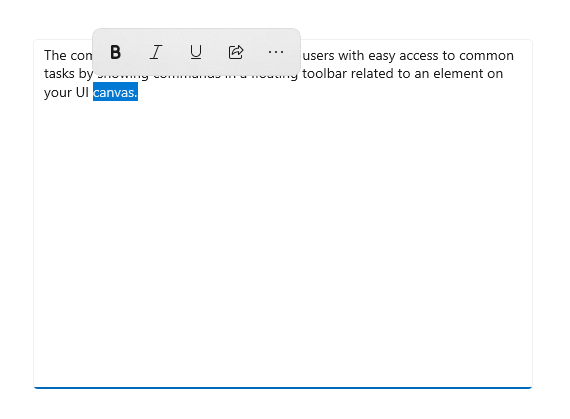
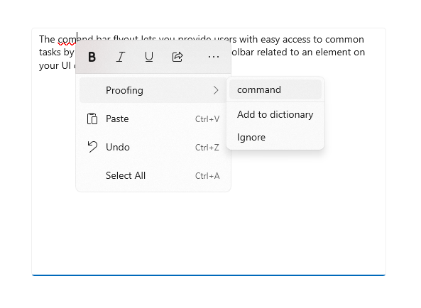

Command bar flyout
The command bar flyout lets you provide users with easy access to common tasks by showing commands in a floating toolbar related to an element on your UI canvas.

Like CommandBar, CommandBarFlyout has PrimaryCommands and SecondaryCommands properties you can use to add commands. You can place commands in either collection, or both. When and how the primary and secondary commands are displayed depends on the display mode.
The command bar flyout has two display modes: collapsed and expanded.
- In the collapsed mode, only the primary commands are shown. If your command bar flyout has both primary and secondary commands, a "see more" button, which is represented by an ellipsis [...], is displayed. This lets the user get access to the secondary commands by transitioning to expanded mode.
- In the expanded mode, both the primary and secondary commands are shown. (If the control has only secondary items, they are shown in a way similar to the MenuFlyout control.)
Is this the right control?
Use the command bar flyout control to show a collection of commands to the user, such as buttons and menu items, in the context of an element on the app canvas.
Command bar flyout is the recommended control for creating context menus. This allows the common commands (such as Copy, Cut, Paste, Delete, Share or text selection commands) that are most contextually relevant for the context menu's scenario to be added as primary commands so that they will be shown as a single, horizontal row in the command bar flyout. The TextCommandBarFlyout is already configured appropriately to automatically display text commands in TextBox, TextBlock, RichEditBox, RichTextBlock, and PasswordBox controls. A CommandBarFlyout can be used to replace the default text commands on text controls.
To show contextual commands on list items follow the guidance in Contextual commanding for collections and lists.
Proactive vs. reactive invocation
There are typically two ways to invoke a flyout or menu that's associated with an element on your UI canvas: proactive invocation and reactive invocation.
In proactive invocation, commands appear automatically when the user interacts with the item that the commands are associated with. For example, text formatting commands might pop up when the user selects text in a text box. In this case, the command bar flyout does not take focus. Instead, it presents relevant commands close to the item the user is interacting with. If the user doesn't interact with the commands, they are dismissed.
In reactive invocation, commands are shown in response to an explicit user action to request the commands; for example, a right-click. This corresponds to the traditional concept of a context menu.
You can use the CommandBarFlyout in either way, or even a mixture of the two.
Create a command bar flyout
The WinUI 3 Gallery app includes interactive examples of most WinUI 3 controls, features, and functionality. Get the app from the Microsoft Store or get the source code on GitHub
This example shows how to create a command bar flyout and use it both proactively and reactively. When the image is tapped, the flyout is shown in its collapsed mode. When shown as a context menu, the flyout is shown in its expanded mode. In either case, the user can expand or collapse the flyout after it's opened.
<Grid>
<Grid.Resources>
<CommandBarFlyout x:Name="ImageCommandsFlyout">
<AppBarButton Label="Favorite" Icon="OutlineStar" ToolTipService.ToolTip="Favorite"/>
<AppBarButton Label="Copy" Icon="Copy" ToolTipService.ToolTip="Copy"/>
<AppBarButton Label="Share" Icon="Share" ToolTipService.ToolTip="Share"/>
<CommandBarFlyout.SecondaryCommands>
<AppBarButton Label="Rotate" Icon="Rotate"/>
<AppBarButton Label="Delete" Icon="Delete"/>
</CommandBarFlyout.SecondaryCommands>
</CommandBarFlyout>
</Grid.Resources>
<Image Source="Assets/image1.png" Width="300"
Tapped="Image_Tapped"
FlyoutBase.AttachedFlyout="{x:Bind ImageCommandsFlyout}"
ContextFlyout="{x:Bind ImageCommandsFlyout}"/>
</Grid>
private void Image_Tapped(object sender, TappedRoutedEventArgs e)
{
var flyout = FlyoutBase.GetAttachedFlyout((FrameworkElement)sender);
var options = new FlyoutShowOptions()
{
// Position shows the flyout next to the pointer.
// "Transient" ShowMode makes the flyout open in its collapsed state.
Position = e.GetPosition((FrameworkElement)sender),
ShowMode = FlyoutShowMode.Transient
};
flyout?.ShowAt((FrameworkElement)sender, options);
}
Here's the command bar flyout in its collapsed state.

Here's the same command bar flyout in its expanded state showing secondary commands.

Show commands proactively
When you show contextual commands proactively, only the primary commands should be shown by default (the command bar flyout should be collapsed). Place the most important commands in the primary commands collection, and additional commands that would traditionally go in a context menu into the secondary commands collection.
To proactively show commands, you typically handle the Click or Tapped event to show the command bar flyout. Set the flyout's ShowMode to Transient or TransientWithDismissOnPointerMoveAway to open the flyout in its collapsed mode without taking focus.
Text controls have a SelectionFlyout property. When you assign a flyout to this property, it is automatically shown when text is selected.
Show commands reactively
When you show contextual commands reactively, as a context menu, the secondary commands are shown by default (the command bar flyout should be expanded). In this case, the command bar flyout might have both primary and secondary commands, or secondary commands only.
To show commands in a context menu, you typically assign the flyout to the ContextFlyout property of a UI element. This way, opening the flyout is handled by the element, and you don't need to do anything more.
If you handle showing the flyout yourself (for example, on a RightTapped event), set the flyout's ShowMode to Standard to open the flyout in its expanded mode and give it focus.
Tip
For more info about options when showing a flyout and how to control placement of the flyout, see Flyouts.
Show an always expanded CommandBarFlyout
When you have primary and secondary commands in a CommandBarFlyout, the "see more" [...] button is displayed by default, and can be used to expand and collapse the secondary commands. If you'd like to keep your CommandBarFlyout in expanded mode and show the secondary commands at all times, you can use the CommandBarFlyout.AlwaysExpanded property.
When the AlwaysExpanded property is set to true, the "see more" button is not shown, and the user is not able to toggle the expanded state of the control. The CommandBarFlyout will still dismiss as usual when a secondary command is clicked or the user clicks outside of the flyout.
This property only has an effect if the CommandBarFlyout has secondary commands. If there are no secondary commands, the CommandBarFlyout will always be in collapsed mode.
Tip
You can still collapse and expand the CommandBarFlyout programmatically by setting the IsOpen property even when the AlwaysExpanded property is set to true.
Commands and content
The CommandBarFlyout control has 2 properties you can use to add commands and content: PrimaryCommands and SecondaryCommands.
By default, command bar items are added to the PrimaryCommands collection. These commands are shown in the command bar and are visible in both the collapsed and expanded modes. Unlike CommandBar, primary commands do not automatically overflow to the secondary commands and might be truncated.
You can also add commands to the SecondaryCommands collection. Secondary commands are shown in the menu portion of the control and are visible only in the expanded mode.
If there are common commands (such as Copy, Cut, Paste, Delete, Share or text selection commands) that are important to the scenario, it is recommended to add them as primary commands rather than secondary commands.
App bar buttons
You can populate the PrimaryCommands and SecondaryCommands directly with AppBarButton, AppBarToggleButton, and AppBarSeparator controls.
The app bar button controls are characterized by an icon and text label. These controls are optimized for use in a command bar, and their appearance changes depending on whether the control is shown in the command bar or the overflow menu.
- In Windows App SDK 1.5 and later: App bar buttons used as primary commands are shown in the command bar with both the text label and icon (if both are set).
<AppBarButton Icon="Copy" Label="Copy"/> - In Windows App SDK 1.4 and earlier: App bar buttons used as primary commands are shown in the command bar with only their icon; the text label is not shown. We recommend that you use a tooltip to show a text description of the command, as shown here.
<AppBarButton Icon="Copy" ToolTipService.ToolTip="Copy"/> - App bar buttons used as secondary commands are shown in the menu, with both the label and icon visible.
Icons
Consider providing menu item icons for:
- The most commonly used items.
- Menu items whose icon is standard or well known.
- Menu items whose icon well illustrates what the command does.
Don't feel obligated to provide icons for commands that don't have a standard visualization. Cryptic icons aren't helpful, create visual clutter, and prevent users from focusing on the important menu items.
Other content
You can add other controls to a command bar flyout by wrapping them in an AppBarElementContainer. This lets you add controls like DropDownButton or SplitButton, or add containers like StackPanel to create more complex UI.
In order to be added to the primary or secondary command collections of a command bar flyout, an element must implement the ICommandBarElement interface. AppBarElementContainer is a wrapper that implements this interface so you can add an element to a command bar even if it doesn't implement the interface itself.
Here, an AppBarElementContainer is used to add extra elements to a command bar flyout. A SplitButton is added to the primary commands to enable text alignment. A StackPanel is added to the secondary commands to allow a more complex layout for zoom controls.
Tip
By default, elements designed for the app canvas might not look right in a command bar. When you add an element using AppBarElementContainer, there are some steps you should take to make the element match other command bar elements:
- Override the default brushes with lightweight styling to make the element's background and border match the app bar buttons.
- Adjust the size and position of the element.
- Wrap icons in a Viewbox with a Width and Height of 16px.
Note
This example shows only the command bar flyout UI, it does not implement any of the commands that are shown. For more info about implementing the commands, see Buttons and Command design basics.
<CommandBarFlyout>
<AppBarButton Icon="Cut" Label="Cut" ToolTipService.ToolTip="Cut"/>
<AppBarButton Icon="Copy" Label="Copy" ToolTipService.ToolTip="Copy"/>
<AppBarButton Icon="Paste" Label="Paste" ToolTipService.ToolTip="Paste"/>
<!-- Alignment controls -->
<AppBarElementContainer>
<SplitButton ToolTipService.ToolTip="Alignment">
<SplitButton.Resources>
<!-- Override default brushes to make the SplitButton
match other command bar elements. -->
<Style TargetType="SplitButton">
<Setter Property="Height" Value="38"/>
</Style>
<SolidColorBrush x:Key="SplitButtonBackground"
Color="Transparent"/>
<SolidColorBrush x:Key="SplitButtonBackgroundPressed"
Color="{ThemeResource SystemListMediumColor}"/>
<SolidColorBrush x:Key="SplitButtonBackgroundPointerOver"
Color="{ThemeResource SystemListLowColor}"/>
<SolidColorBrush x:Key="SplitButtonBorderBrush" Color="Transparent"/>
<SolidColorBrush x:Key="SplitButtonBorderBrushPointerOver"
Color="Transparent"/>
<SolidColorBrush x:Key="SplitButtonBorderBrushChecked"
Color="Transparent"/>
</SplitButton.Resources>
<SplitButton.Content>
<Viewbox Width="16" Height="16" Margin="0,2,0,0">
<SymbolIcon Symbol="AlignLeft"/>
</Viewbox>
</SplitButton.Content>
<SplitButton.Flyout>
<MenuFlyout>
<MenuFlyoutItem Icon="AlignLeft" Text="Align left"/>
<MenuFlyoutItem Icon="AlignCenter" Text="Center"/>
<MenuFlyoutItem Icon="AlignRight" Text="Align right"/>
</MenuFlyout>
</SplitButton.Flyout>
</SplitButton>
</AppBarElementContainer>
<!-- end Alignment controls -->
<CommandBarFlyout.SecondaryCommands>
<!-- Zoom controls -->
<AppBarElementContainer>
<AppBarElementContainer.Resources>
<!-- Override default brushes to make the Buttons
match other command bar elements. -->
<SolidColorBrush x:Key="ButtonBackground"
Color="Transparent"/>
<SolidColorBrush x:Key="ButtonBackgroundPressed"
Color="{ThemeResource SystemListMediumColor}"/>
<SolidColorBrush x:Key="ButtonBackgroundPointerOver"
Color="{ThemeResource SystemListLowColor}"/>
<SolidColorBrush x:Key="ButtonBorderBrush"
Color="Transparent"/>
<SolidColorBrush x:Key="ButtonBorderBrushPointerOver"
Color="Transparent"/>
<SolidColorBrush x:Key="ButtonBorderBrushChecked"
Color="Transparent"/>
<Style TargetType="TextBlock">
<Setter Property="VerticalAlignment" Value="Center"/>
</Style>
<Style TargetType="Button">
<Setter Property="Height" Value="40"/>
<Setter Property="Width" Value="40"/>
</Style>
</AppBarElementContainer.Resources>
<Grid Margin="12,-4">
<Grid.ColumnDefinitions>
<ColumnDefinition Width="Auto"/>
<ColumnDefinition Width="76"/>
<ColumnDefinition Width="Auto"/>
</Grid.ColumnDefinitions>
<Viewbox Width="16" Height="16" Margin="0,2,0,0">
<SymbolIcon Symbol="Zoom"/>
</Viewbox>
<TextBlock Text="Zoom" Margin="10,0,0,0" Grid.Column="1"/>
<StackPanel Orientation="Horizontal" Grid.Column="2">
<Button ToolTipService.ToolTip="Zoom out">
<Viewbox Width="16" Height="16">
<SymbolIcon Symbol="ZoomOut"/>
</Viewbox>
</Button>
<TextBlock Text="50%" Width="40"
HorizontalTextAlignment="Center"/>
<Button ToolTipService.ToolTip="Zoom in">
<Viewbox Width="16" Height="16">
<SymbolIcon Symbol="ZoomIn"/>
</Viewbox>
</Button>
</StackPanel>
</Grid>
</AppBarElementContainer>
<!-- end Zoom controls -->
<AppBarSeparator/>
<AppBarButton Label="Undo" Icon="Undo"/>
<AppBarButton Label="Redo" Icon="Redo"/>
<AppBarButton Label="Select all" Icon="SelectAll"/>
</CommandBarFlyout.SecondaryCommands>
</CommandBarFlyout>
Here's the collapsed command bar flyout with an open SplitButton.

Here's the expanded command bar flyout with custom zoom UI in the menu.

Create a context menu with secondary commands only
You can use a command bar flyout with only secondary commands to create a context menu that achieves the same look and behavior of menu flyout.
<Grid>
<Grid.Resources>
<!-- A command bar flyout with only secondary commands. -->
<CommandBarFlyout x:Name="ContextMenu">
<CommandBarFlyout.SecondaryCommands>
<AppBarButton Label="Copy" Icon="Copy"/>
<AppBarButton Label="Save" Icon="Save"/>
<AppBarButton Label="Print" Icon="Print"/>
<AppBarSeparator />
<AppBarButton Label="Properties"/>
</CommandBarFlyout.SecondaryCommands>
</CommandBarFlyout>
</Grid.Resources>
<Image Source="Assets/image1.png" Width="300"
ContextFlyout="{x:Bind ContextMenu}"/>
</Grid>
Here's the command bar flyout as a context menu.

You can also use a CommandBarFlyout with a DropDownButton to create a standard menu.
<CommandBarFlyout>
<AppBarButton Icon="Placeholder"/>
<AppBarElementContainer>
<DropDownButton Content="Mail">
<DropDownButton.Resources>
<!-- Override default brushes to make the DropDownButton
match other command bar elements. -->
<Style TargetType="DropDownButton">
<Setter Property="Height" Value="38"/>
</Style>
<SolidColorBrush x:Key="ButtonBackground"
Color="Transparent"/>
<SolidColorBrush x:Key="ButtonBackgroundPressed"
Color="{ThemeResource SystemListMediumColor}"/>
<SolidColorBrush x:Key="ButtonBackgroundPointerOver"
Color="{ThemeResource SystemListLowColor}"/>
<SolidColorBrush x:Key="ButtonBorderBrush"
Color="Transparent"/>
<SolidColorBrush x:Key="ButtonBorderBrushPointerOver"
Color="Transparent"/>
<SolidColorBrush x:Key="ButtonBorderBrushChecked"
Color="Transparent"/>
</DropDownButton.Resources>
<DropDownButton.Flyout>
<CommandBarFlyout Placement="BottomEdgeAlignedLeft">
<CommandBarFlyout.SecondaryCommands>
<AppBarButton Icon="MailReply" Label="Reply"/>
<AppBarButton Icon="MailReplyAll" Label="Reply all"/>
<AppBarButton Icon="MailForward" Label="Forward"/>
</CommandBarFlyout.SecondaryCommands>
</CommandBarFlyout>
</DropDownButton.Flyout>
</DropDownButton>
</AppBarElementContainer>
<AppBarButton Icon="Placeholder"/>
<AppBarButton Icon="Placeholder"/>
</CommandBarFlyout>
Here's a drop down button menu in a command bar flyout.

Command bar flyouts for text controls
The TextCommandBarFlyout is a specialized command bar flyout that contains commands for editing text. Each text control shows the TextCommandBarFlyout automatically as a context menu (right-click), or when text is selected. The text command bar flyout adapts to the text selection to only show relevant commands.
Here's a text command bar flyout on text selection.

Here's an expanded text command bar flyout that shows the secondary commands.

Available commands
This table shows the commands that are included in a TextCommandBarFlyout, and when they are shown.
| Command | Shown... |
|---|---|
| Bold | when the text control is not read-only (RichEditBox only). |
| Italic | when the text control is not read-only (RichEditBox only). |
| Underline | when the text control is not read-only (RichEditBox only). |
| Proofing | when IsSpellCheckEnabled is true and misspelled text is selected. |
| Cut | when the text control is not read-only and text is selected. |
| Copy | when text is selected. |
| Paste | when the text control is not read-only and the clipboard has content. |
| Undo | when there is an action that can be undone. |
| Select all | when text can be selected. |
Custom text command bar flyouts
TextCommandBarFlyout can't be customized, and is managed automatically by each text control. However, you can replace the default TextCommandBarFlyout with custom commands.
- To replace the default TextCommandBarFlyout that's shown on text selection, you can create a custom CommandBarFlyout (or other flyout type) and assign it to the SelectionFlyout property. If you set SelectionFlyout to null, no commands are shown on selection.
- To replace the default TextCommandBarFlyout that's shown as the context menu, assign a custom CommandBarFlyout (or other flyout type) to the ContextFlyout property on a text control. If you set ContextFlyout to null, the menu flyout shown in previous versions of the text control is shown instead of the TextCommandBarFlyout.
Light dismiss
Light dismiss controls–such as menus, context menus, and other flyouts–trap keyboard and gamepad focus inside the transient UI until dismissed. To provide a visual cue for this behavior, light dismiss controls on Xbox will draw an overlay that dims the visibility of out of scope UI. This behavior can be modified with the LightDismissOverlayMode property. By default, transient UIs will draw the light dismiss overlay on Xbox (Auto) but not other device families. You can choose to force the overlay to be always On or always Off.
<CommandBarFlyout LightDismissOverlayMode="Off" /> >
UWP and WinUI 2
Important
The information and examples in this article are optimized for apps that use the Windows App SDK and WinUI 3, but are generally applicable to UWP apps that use WinUI 2. See the UWP API reference for platform specific information and examples.
This section contains information you need to use the control in a UWP or WinUI 2 app.
The CommandBarFlyout control for UWP apps is included as part of WinUI 2. For more info, including installation instructions, see WinUI 2. APIs for this control exist in both the Windows.UI.Xaml.Controls (UWP) and Microsoft.UI.Xaml.Controls (WinUI) namespaces.
- UWP APIs: CommandBarFlyout class, TextCommandBarFlyout class, AppBarButton class, AppBarToggleButton class, AppBarSeparator class
- WinUI 2 Apis: CommandBarFlyout class, TextCommandBarFlyout class
- Open the WinUI 2 Gallery app and see the CommandBarFlyout in action. The WinUI 2 Gallery app includes interactive examples of most WinUI 2 controls, features, and functionality. Get the app from the Microsoft Store or get the source code on GitHub.
We recommend using the latest WinUI 2 to get the most current styles and templates for all controls. WinUI 2.2 or later includes a new template for this control that uses rounded corners. For more info, see Corner radius.
To use the code in this article with WinUI 2, use an alias in XAML (we use muxc) to represent the Windows UI Library APIs that are included in your project. See Get Started with WinUI 2 for more info.
xmlns:muxc="using:Microsoft.UI.Xaml.Controls"
<muxc:CommandBarFlyout />